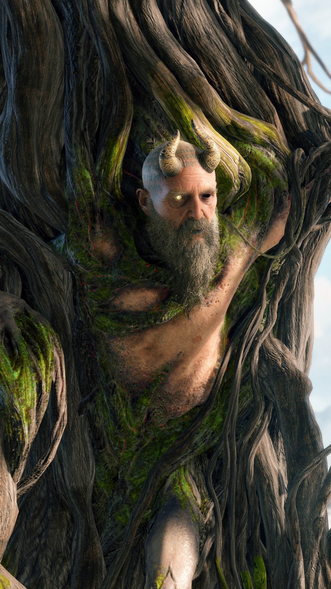
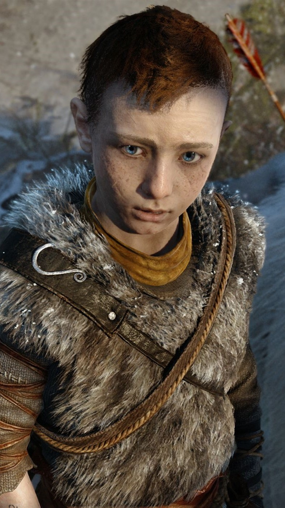
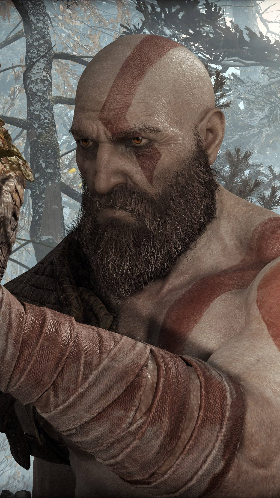
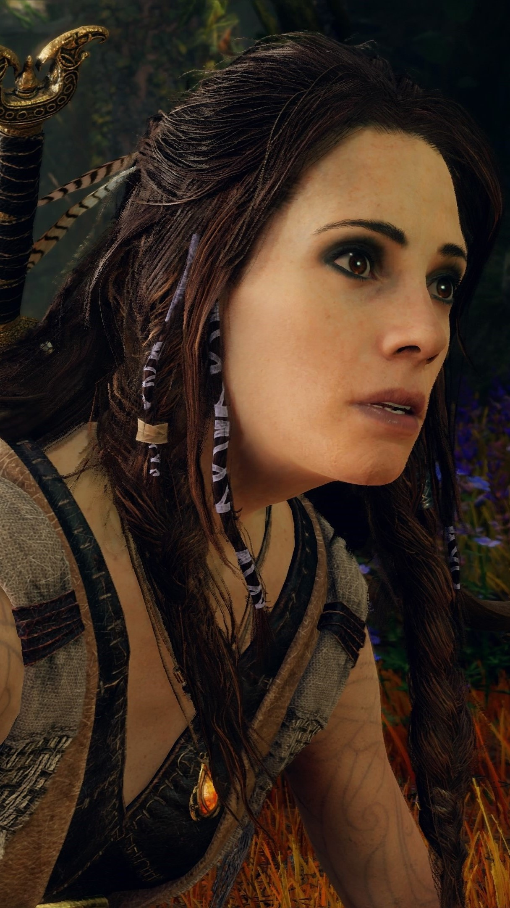

A bold new beginning
From Santa Monica Studio and creative director Cory Barlog comes a new beginning for God of War. Living as a man outside the shadow of the gods, Kratos must adapt to unfamiliar lands, unexpected threats, and a second chance at being a father. Together with his son Atreus, the pair will venture into the brutal Norse wilds and fight to fulfill a deeply personal quest.
Characters
Mimir
He is the Norse God of Knowledge and Wisdom, and an ally of Kratos and Atreus. He was Odin's advisor and the ambassador of the Aesir Gods until Odin imprisoned him 109 years ago, and took his left eye to place it into statue of Thor at the lake near Tyr's Temple.
Atreus
Divine-Jötnar Physiology: Atreus is the son of Kratos, a Greek divine being and the former God of War, and son to Zeus, and Laufey, a powerful Jötnar Giant. As a result of this, Atreus has a tremendous physiology, making him a hybrid of the Greek and Norse pantheon.
Kratos
Throughout the Greek era of the series, Kratos was a Spartan warrior, who became known as the "Ghost of Sparta" after accidentally killing his family due to the trickery of his former mentor Ares, the God of War. He later avenges the deaths of his family and becomes the new "God of War" after killing Ares.
Freya
Witch of the Woods. Living recluse in harmony with the nature and forcefully bound to Midgard since Odin cursed her, she provides crucial help to Kratos and Atreus, most notably saving the life of the latter.